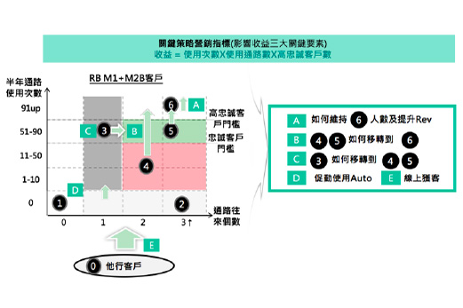
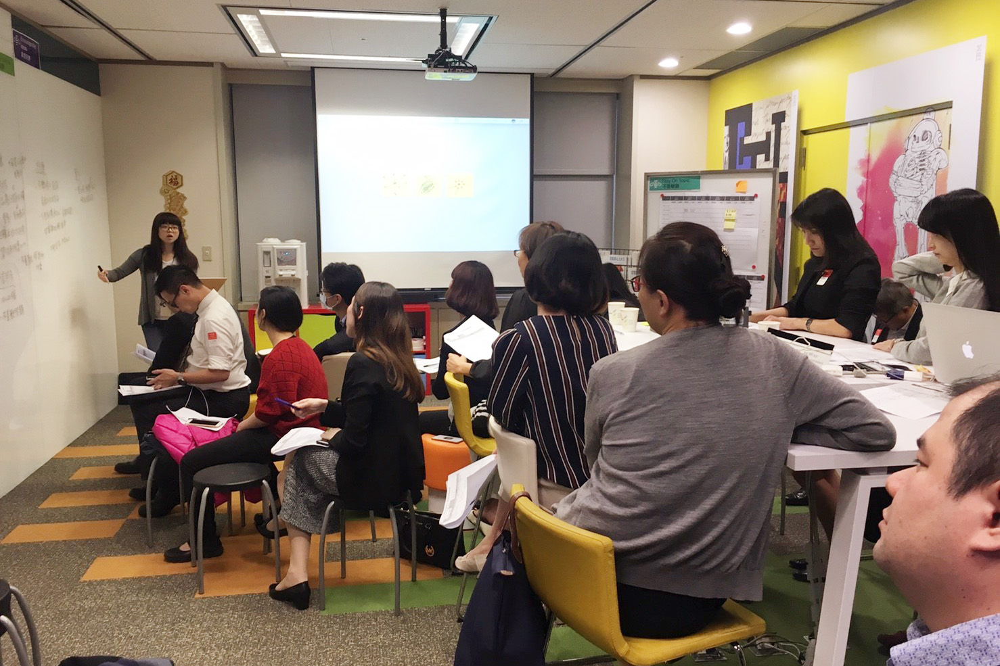
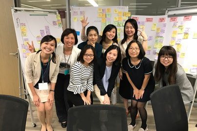
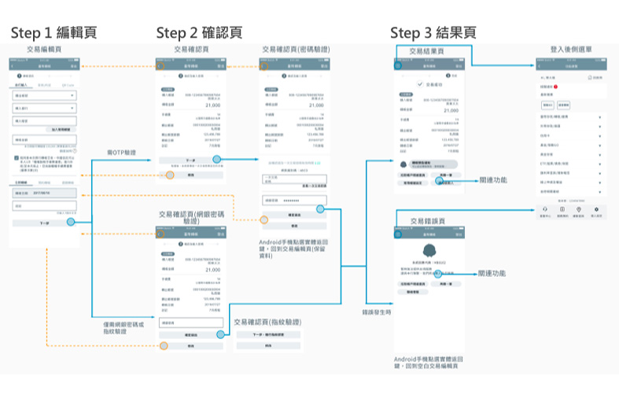
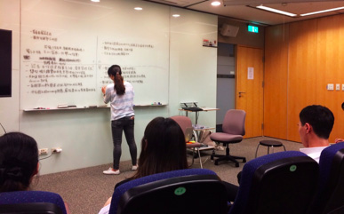
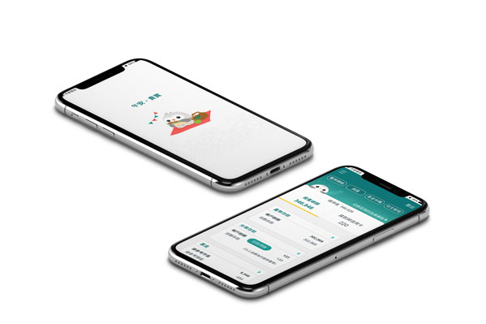

Mobile Banking App
The largest commercial bank in Taiwan would like to redesign their internet banking/ mobile banking in order to provide the better user experience. The information architect and the page flow of the current mobile banking app are really complex, and the interaction way is also out of date. My team and I solved the complex design problems through arranged user experience research, analyzed previous application and put effort on providing the refined recommendations, designing interactions, prototyping.
I am the ux researcher and designer in this project. As a researcher, I made the research plan and conducted interviews to bring out users' insight. As a designer, we hosted designing workshop then designed the interaction flow and made the wireframe. Besides, I was also involved in the usability test to verify whether our design is user-friendly.
— UX Researcher, UX Designer
- Contextual Inquiry
- Secondary Research
- In-depth interview
- Persona
- Scenarios & Storyboards
- Paper prototype
- Hi-fi prototype
- Design guideline
Approach

Step 1. Analyzed previous application
The team did some secondary research to decide the refine direction. We analyzed the data in order to define the customer segmentation and their different behavior.

Step 2. User Interviews and Contextual Inquiry
We conducted 15 user interviews and brought out their insights. My team used Holtzblatt et al’s Rapid Contextual Inquiry methodology to understand the scope of the problem: We discussions were held to retell events in the interview, key points (affinity notes) were captured and models representing the users’ pain points were drawn interview notes in order to converge the raw information into workshop material.

Step 3. Design Thinking Workshop
We pointed out 6 main refined-directions and 4 to-be customer journey after the design thinking workshop. We also evaluated the feasibility of our workshop outcome and even applied the new interaction process into the previous app in order to provide a better user experience.

Step 4. Wireframing
“Doing is more important than saying.” Based on the solutions which come out from the workshop, we made the interaction flow so that the designers are able to bring out the new interaction experience and the wireframes.

Step 5. Usability Testing
Sponsor users were also a key to prove whether our redesign direction is correct. Hence, after the wireframing session, we recruited another 12 users to test the usability of our product and successfully debriefed several findings so that we could adjust our design to get closer to the user’s true need.
Result
2
Workshops
15
In-depth Interviews
12
Usability Testings

Within this one-year project, we rearranged the whole structure of the mobile banking. After the user research and design stages, I also participated in the developing session and sat in every system analysis meeting to understand how the banking datacenter works. Within the back and forth discussion, design team and development team got the consensus of always keep “provide the better user experience and transfer the data efficiently” in mind. After all, the mobile bank was launched in 2018 April and could be downloaded in both apple store and google play.